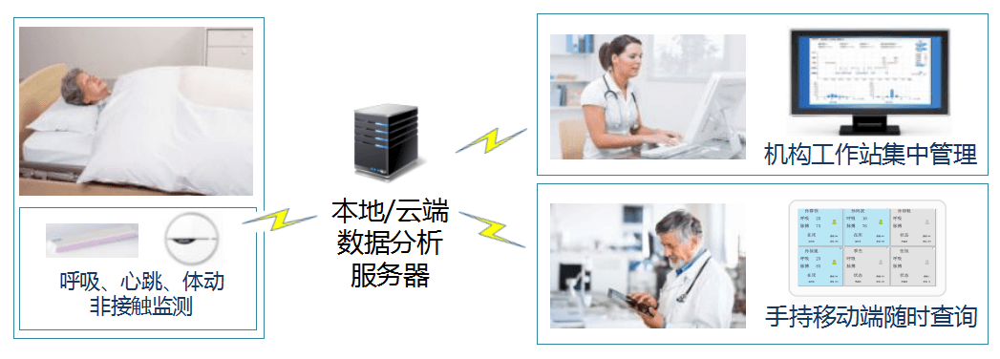

方案简介
随着我国家庭小型化发展趋势的日益凸显，少子、老龄化使得空巢老年人家庭日益增多。针对此状况，老年公寓开始逐步发展，就目前的老年公寓而言，由于管理手段落后，不能实现智能化、信息化的管理。 北京养老机构监护管理系统为从提升养老机构的管理效率和信息化水平入手，通过自动采集老人日常活动、身体状态及居住环境等数据，针对异常情况进行快速的预警及报警响应。同时为整个老年社区建立历资料数据库，为各级管理人员提供科学的参考依据。 本系统不仅提高了老人信息的智能化、自动化管理，做到养老院信息化管理、门禁系统管理、智能监护、 脱离监控报警、老人的活动轨迹、定点提醒护理、老人行为分析、防摔倒报警、紧急报警、智能尿湿提醒、监测老人的心率、体温等生命体征等功能，而且对护理人员也提出了更高的要求。
方案优势
•通过非接触人体传感设备，构建全天候在宅不间断监测环境 •全面覆盖夜间监护盲点和护理人员巡班间隔盲点 •根据环境特征，提供云端/本地数据服务器
功能明细
•解放护理人员,随时随地关注老人状态
实时数据随时查看和及时提醒。解决日常及夜间巡房时未能及时发现老人身体异常的问题
如老人夜间体征数据异常，护理人员移动终端马上得到紧急通知，可以迅速采取救护措施。解决夜间无人看护时老人异常无法发现的问题
•多人员集中管理,提供睡眠及体征分析
通过工作站管理平台可以随时查看每个房间住户指定日期的睡眠、呼吸、心率及其他健康信息
同时监护多间住房内老人的关键体征数据：呼吸、脉搏，一旦发生异常马上自动提醒
系统构成
·云端/本地数据分析服务器（视环境提供） ·非接触人体体征传感器（床下及房间墙上安置） ·手持移动终端 ·非接触传感器不间断发送老人体征数据到服务器 ·服务器将体征数据迅速分析处理
·养老机构工作站值班人员，通过PC端随时查看用户体征数据，接受系统报警 ·养老机构巡班人员，通过移动终端随时接收用户紧急通知，查看用户体征信息
